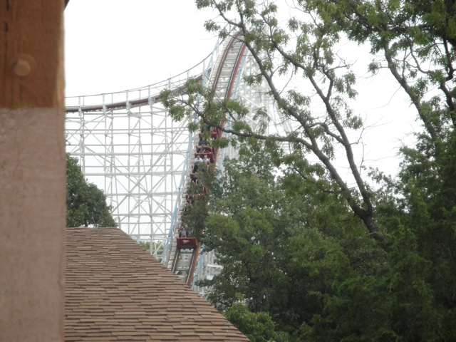
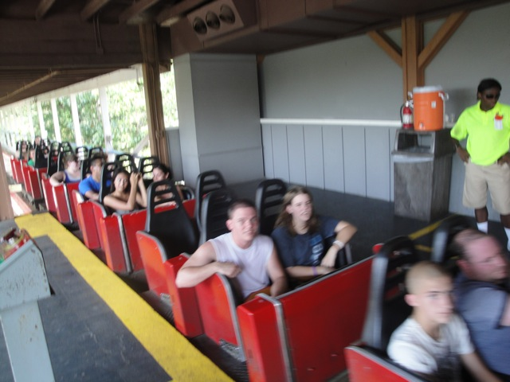
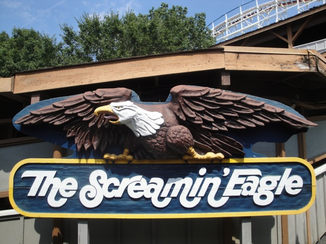

| |
Screamin Eagle Review

We're here at Six Flags St. Louis and todays ride we'll be reviewing is Screamin Eagle. Once you get in the cars and pull down the lap bars and buckle the seatbelt, you're on your way. First off, you go through a big peice of straight track, just inching along until you reach the lifthill. After climbing the lifthill for some time, we reach the top, head down a small drop, and turnaround. We head up a small hill before we get a good look at it. The first drop. Suddenly, it looks a lot bigger than how it looks on the ground. But no time to ponder decisions to ride this thing now. Down you go. The drop actually provides us with some really good speed. We're going fairly fast now. Then we go over our first bunny hop. It's a fun hill, while not a big airtime hill, you just soar over it. Though it's still really fun, as you just soar over this bunny hop with such grace, before dropping back down to the ground. We go through a slight turn, though you don't get any laterals from it and then you head up another bunny hop. Now this one takes away all of your speed. But it has a good drop back down that picks up the speed that we lost. We then shred through a small hill. However, it's at a really low angle, not the typical parabola shape most bunny hops have. So yeah. After shredding through that, we go through another one. Hey, there may not be any airtime here, but at least it's a cool view with trees flying past us. We then head up a hill, there's some mild floater air here, but not much. Turn to the left for a change, and then drop back down. Now we'll be going through a bunch of bunny hops with a view of the Boss. After that, we go through a tiny bunny hop, that if you had your eyes closed, you'd swear it was straight track. However, after that, you rise up and turnaround. The turnaround actually has some decent laterals before dropping back down. Dropping back down, we get more STRAIGHT TRACK!!!! Seriously, what is up with this park and its straight track. After that, we rise up, turn right, drop back down and go through another bunny hop. Not special, but fun. However, we rise up into the brake run covered by a shed. Our ride is over. While Screamin Eagle is nothing special, it is fun and does offer some speed and floater air. If you're into classic out and back coasters, you'll enjoy Screamin Eagle.
7/10
Location: Six Flags St. Louis
Opened: 1976
Built by: Philadelphia Toboggan Coasters
Last Ridden: August 10, 2008
Screamin Eagle Photos


|